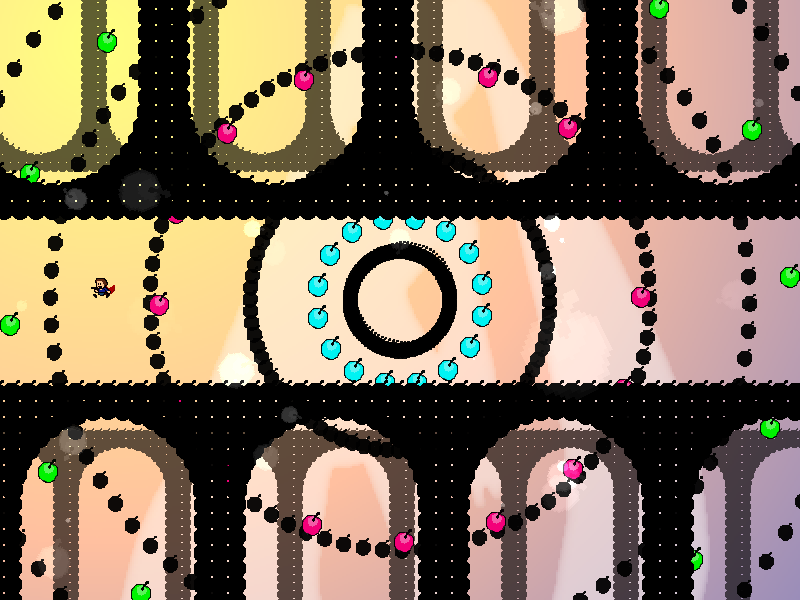
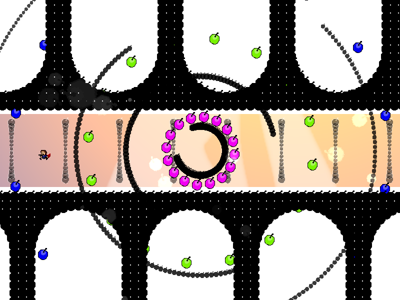

| creator | segment | label | jump |
|---|---|---|---|
| NN | 1:00.80~1:07.20 | R | infinite |
反復型の弾幕です。
透明化とともに半径が拡大する同心円状弾幕の動きを追跡することを目的としています。
画面中央を中心として回転する黒色の同心円状弾幕に関して、これらは透明化とともに系全体で共有するランダムな速度で半径が拡大します。
透明化開始から20stepが経過した時点でこれらは完全に視認不可能となりますが、それ以降も半径は拡大し続けます。
透明化開始から60step経過後に半径の拡大は停止し、その時点での半径が大きいものから順次当たり判定を伴って実体化します。
なお、拡大した半径が一定の値を上回った場合、その値は0となり、中心に収束した状態から再度拡大します（半径に関してループする）。
また、これらは消滅の際に円の一部が欠けた状態となった時点で当たり判定がなくなります（fig.5-1.1）。
